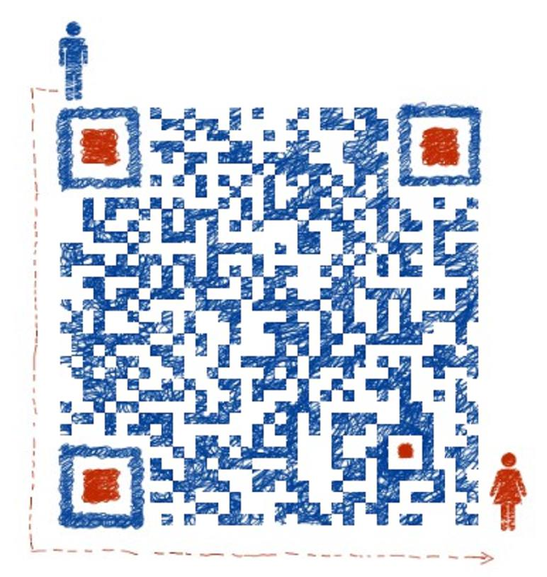

Dongliang Chang 常东良
Ph.D. Candidate
PRIS lab
Information and Communication Engineering
Beijing University of Posts and Telecommunications (BUPT)
Email: changdongliang@bupt.edu.cn
WeChat： 
[CV]
[Google Scholar]
[GitHub]
[ArXiv]
My primary research interests are Fine-Grained Image Analysis (FGIA) and Domain adaptation (DA).
In particular, I an interested in developing algorithms that can understand what people see and contribute to a better life.
I am advised by Prof. Zhanyu Ma and
Prof. Yi-Zhe Song.
Keywords: Fine-Grained Image Analysis, Domain Adaptation, Transfer Learning, Open Set
News
Education
Beijing University of Posts and Telecommunications (BUPT) (From 2019.09)
Beijing University of Posts and Telecommunications (BUPT) (2017.04-2019.09)
Lanzhou University of Technology (LUT) (2016.09-2019.06)
Zhoukou Normal University (ZKNU) (2012.09 ~ 2016.06)
Publications
International Journal
-
The Devil is in the Channels: Mutual-Channel Loss for Fine-Grained Image Classification
Dongliang Chang, Yifeng Ding, Jiyang Xie, Ayan Kumar Bhunia, Xiaoxu Li, Zhanyu Ma*, Ming Wu, Jun Guo, and Yi-Zhe Song
IEEE Transactions on Image Processing 2020
[paper] [code] -
Large-margin Regularized Softmax Cross-Entropy Loss
Xiaoxu Li*, Dongliang Chang, Tao Tian, and Jie Cao
IEEE Access 2019
[paper] -
Fine-Grained Vehicle Classification with Channel Max Pooling Modified CNNs
Zhanyu Ma*, Dongliang Chang, Jiyang Xie, Yifeng Ding, Shaoguo Wen, Xiao-Xu Li, Zhongwei Si, and Jun Guo
IEEE Transactions on Vehicular Technology 2019
[paper] -
Dual Cross-Entropy Loss for Small-Sample Fine-Grained Vehicle Classification
Xiaoxu Li*, Liyun Yu, Dongliang Chang, Zhanyu Ma*, and Jie Cao
IEEE Transactions on Vehicular Technology 2019
[paper] -
Prediction of short-term PV power output and uncertainty analysis
Luyao Liu, Yi Zhao, Dongliang Chang, Jiyang Xie, Zhanyu Ma*, Qie Sun*, Hongyi Yin*, and Ronald Wennersten
Applied Energy 2018
[paper]
International Conference
-
IU-Module: Intersection and Union Module for Fine-Grained Visual Classification
Yixiao Zheng, Dongliang Chang, Jiyang Xie, and Zhanyu Ma*
IEEE International Conference on Multimedia and Expo (ICME), 2020
-
FICAL: Focal Inter-Class Angular Loss for Image Classification
Xinran Wei, Dongliang Chang, Jiyang Xie, Yixiao Zheng, Chen Gong, Chuang Zhang, and Zhanyu Ma
IEEE International Conference on Visual Communications and Image Processing (VCIP), 2019
[paper] -
Channel Max Pooling for Image Classification
Lu Cheng, Dongliang Chang*, Jiyang Xie, Rongliang Ma, Chunsheng Wu, and Zhanyu Ma
International Conference on Intelligence Science and Big Data Engineering (IScIDE), 2019
[paper] -
Dynamic Attention Loss for Small-sample Image Classification
Jie Cao, Yinping Qiu, Dongliang Chang, Xiaoxu Li*, and Zhanyu Ma*
The 11th Annual Conference Organized by Asia-Pacific Signal and Information Processing Association (APSIPA), 2019
[paper] -
Mixed Attention Mechanism for Small-Sample Fine-grained Image Classification
Xiaoxu Li, Jijie Wu, Dongliang Chang, Zhanyu Ma*, and Jie Cao*
The 11th Annual Conference Organized by Asia-Pacific Signal and Information Processing Association (APSIPA), 2019
[paper] -
Small-Sample Image Classification Method of Combining Prototype and Margin Learning
Xiaoxu Li, Liyun Yu, Dongliang Chang, Zhanyu Ma*, and Jie Cao*
The 11th Annual Conference Organized by Asia-Pacific Signal and Information Processing Association (APSIPA), 2019
[paper] -
SSE: A new selective initialization strategy for Snapshot Ensembling
Dongliang Chang, Xiaoxu Li*, Jiyang Xie, Zhanyu Ma, Jun Guo, and Jie Cao
IEEE International Conference on Cloud Computing and Intelligence Systems (CCIS), 2018
[paper] -
Softmax Cross Entropy Loss with Unbiased Decision Boundary for Image Classifications
Jie Cao*, Zhe Su, Liyun Yu, Dongliang Chang, Xiaoxu Li , and Zhanyu Ma
Chinese Automation Congress(CAC), 2018
[paper]
Arxiv
-
Mind the Gap: Enlarging the Domain Gap in Open Set Domain Adaptation
Dongliang Chang, Aneeshan Sain, Zhanyu Ma, Yi-Zhe Song, Jun Guo
ArXiv 2020
[paper] [code] -
Dual-attention Guided Dropblock Module for Weakly Supervised Object Localization
Junhui Yin, Siqing Zhang, Dongliang Chang, Zhanyu Ma, Jun Guo
ArXiv 2020
[paper] -
Fine-Grained Visual Classification via Progressive Multi-Granularity Training of Jigsaw Patches
Ruoyi Du, Dongliang Chang, Ayan Kumar Bhunia, Jiyang Xie, Yi-Zhe Song, Zhanyu Ma, Jun Guo
ArXiv 2020
[paper] [code] -
Channel Attention with Embedding Gaussian Process: A Probabilistic Methodology n
Jiyang Xie, Dongliang Chang, Zhanyu Ma, Guoqiang Zhang, Jun Guoo
ArXiv 2020
[paper] -
Weakly Supervised Attention Pyramid Convolutional Neural Network for Fine-Grained Visual Classification
Yifeng Ding, Shaoguo Wen, Jiyang Xie, Dongliang Chang, Zhanyu Ma, Zhongwei Si, Haibin Lingn
ArXiv 2020
[paper] [code] -
Competing Ratio Loss for Discriminative Multi-class Image Classification
Ke Zhang, Xinsheng Wang, Yurong Guo, Dongliang Chang, Zhenbing Zhao, Zhanyu Ma, Tony X.Han
ArXiv 2019
[paper]
Dataset
Overview
EEG-Database involves three parts: 1) individual behavior data; 2) individual EEG data; 3) image-sketch-text data. Individual behavior data and individual EEG data are collected from the experiments on 24 subjects. Image-sketch-text data contains 1120 image-sketch-text pairs, which are split into 4 parts randomly. More details can be found in the README of EEG-Database.
 Download
Download
All data can be downloaded [here]. (passwd: nd0w)
Awards Scholarships
BUPT Outstanding Doctoral Student Reserve Scholarship (2019)
Services
Reviewer: IEEE Transactions on Vehicular Technology 2019, 2020